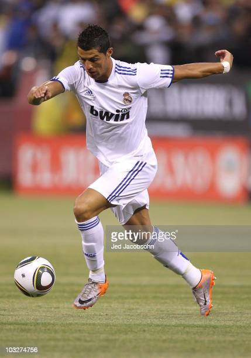

Cristiano Ronaldo en image


Cristiano Ronaldo dos Santos Aveiro GOIH ComM (né le 5 février 1985) est un footballeur professionnel portugais évoluant au poste d'attaquant et capitaine de l'équipe nationale du Portugal.